Code
knitr::opts_chunk$set(echo = TRUE, warning = FALSE)Felix Betanourt
May 25, 2023
Burnout is a pervasive issue in many professions, and its consequences can be significant for individuals and organizations alike. According to Maslach and Leiter (2016), burnout is characterized by emotional exhaustion, depersonalization, and reduced personal accomplishment. It is prevalent in a variety of fields, including healthcare (West et al., 2016), among other professions. Burnout can have serious consequences, including decreased job satisfaction, increased absenteeism, and turnover (West et al., 2016).
There is a growing body of research exploring the causes and consequences of burnout, as well as potential solutions. Some scholars have identified factors such as job demands, lack of control, and social support as contributing to burnout (Bakker & Demerouti, 2017).
Malesic (2022) emphasizes on working conditions as key factor in burnout in organizations. In particular when the employer doesn’t reward enough, or unfairness is a common practice, or there is a lack of community among coworkers, then the ability and willingness to keep doing the job disintegrate.
Lee & Eissenstat (2017), for instance, affirm that psychological job demands and work-to-family conflict, as well as control over working hours/schedule, decision-making authority, and role clarity, have significant effects on burnout.
This research paper aims to provide a comprehensive understanding of how the type of business and seniority level explain the level of burnout.
In this research we expect that:
H1. Working in Services (vs product type of business) predicts a significantly higher burnout rate, especially in Female workers.
H2. Fewer years of experience (lower seniority) is significantly related to a higher burnout rate.
H3. The numbers of work hours allocated affect the burnout rate significantly in employees working from home setup (vs on site).
# Loading packages
suppressPackageStartupMessages(library(dplyr))
suppressPackageStartupMessages(library(tidyverse))
suppressPackageStartupMessages(library(data.table))
suppressPackageStartupMessages(library(psych))
suppressPackageStartupMessages(library(scales))
suppressPackageStartupMessages(library(lattice))
suppressPackageStartupMessages(library(formattable))
suppressPackageStartupMessages(library(kableExtra))
suppressPackageStartupMessages(library(ggplot2))
# Reading the data.
burn <- read.csv("_data/burnout.csv")The dataset was obtained from:
https://www.kaggle.com/datasets/blurredmachine/are-your-employees-burning-out
Let’s see the strucutre of the dataset:
'data.frame': 22750 obs. of 9 variables:
$ Employee.ID : chr "fffe32003000360033003200" "fffe3700360033003500" "fffe31003300320037003900" "fffe32003400380032003900" ...
$ Date.of.Joining : chr "2008-09-30" "2008-11-30" "2008-03-10" "2008-11-03" ...
$ Gender : chr "Female" "Male" "Female" "Male" ...
$ Company.Type : chr "Service" "Service" "Product" "Service" ...
$ WFH.Setup.Available : chr "No" "Yes" "Yes" "Yes" ...
$ Designation : num 2 1 2 1 3 2 3 2 3 3 ...
$ Resource.Allocation : num 3 2 NA 1 7 4 6 4 6 6 ...
$ Mental.Fatigue.Score: num 3.8 5 5.8 2.6 6.9 3.6 7.9 4.4 NA NA ...
$ Burn.Rate : num 0.16 0.36 0.49 0.2 0.52 0.29 0.62 0.33 0.56 0.67 ...The dataset contain 9 variables and 22750 observations.
Four of the variables are categorical and five are numeric (including one as date).
According to the source of the data, here is an definition of each variable:
Employee ID: The unique ID allocated for each employee.
Date of Joining: The date-time when the employee has joined the organization.
Gender: The gender of the employee
Company Type: The type of company where the employee is working
WFH Setup Available: Is the work from home facility available for the employee
Designation: The designation (designations refer to the expertise and qualifications a person must complete certain jobs) of the employee of work in the organization. In the range of [0.0, 5.0] bigger is higher designation.
Resource Allocation: The amount of resource allocated to the employee to work, ie. number of working hours.In the range of [1.0, 10.0] (higher means more resource)
Mental Fatigue Score: The level of fatigue mentally the employee is facing.In the range of [0.0, 10.0] where 0.0 means no fatigue and 10.0 means completely fatigue.
Burnout Rate: The value we need to predict for each employee telling the rate of Bur out while working.In the range of [0.0, 1.0] where the higher the value is more is the Burnout.
Let’s see a Summary for each variable.
But first let’s do some data wrangling:
#simplify some variable names and transforming date
burn <- rename(burn, fatigue = Mental.Fatigue.Score, hours = Resource.Allocation, WFH = WFH.Setup.Available, doh = Date.of.Joining, id = Employee.ID, business = Company.Type, designation = Designation, burn.rate = Burn.Rate, gender = Gender)
#transforming date of hire to tenure
burn$doh <- as.Date(burn$doh)
burn$tenure <- difftime("2023-4-20", burn$doh, units = "weeks")
burn$tenure <- burn$tenure/52
burn$tenure <- as.numeric(burn$tenure)
#eliminate ID as it's not relevant for the analysis. They are just the identification for each individual
burn2 <- burn %>%
dplyr::select(-id)
burn2 <- burn2%>%
mutate(gender.f = case_when(
gender == "Male" ~ 0,
gender == "Female" ~ 1,
)) %>%
mutate(business.p = case_when(
business == "Service" ~ 0,
business == "Product" ~ 1,
)) %>%
mutate(WFH.y = case_when(
WFH == "Yes" ~ 1,
WFH == "No" ~ 0,
))| vars | n | mean | sd | median | min | max | |
|---|---|---|---|---|---|---|---|
| designation | 1 | 22750 | 2.1787253 | 1.1351447 | 2.00000 | 0.00000 | 5.00000 |
| hours | 2 | 21369 | 4.4813983 | 2.0472111 | 4.00000 | 1.00000 | 10.00000 |
| fatigue | 3 | 20633 | 5.7281879 | 1.9208387 | 5.90000 | 0.00000 | 10.00000 |
| burn.rate | 4 | 21626 | 0.4520055 | 0.1982264 | 0.45000 | 0.00000 | 1.00000 |
| tenure | 5 | 22750 | 14.8510224 | 0.2894181 | 14.84936 | 14.34936 | 15.35211 |
| gender.f | 6 | 22750 | 0.5234286 | 0.4994618 | 1.00000 | 0.00000 | 1.00000 |
| business.p | 7 | 22750 | 0.3480000 | 0.4763465 | 0.00000 | 0.00000 | 1.00000 |
| WFH.y | 8 | 22750 | 0.5402198 | 0.4983907 | 1.00000 | 0.00000 | 1.00000 |
Histograms for Burnout Rate, mental Fatigue, Work hours allocated, Designation Level and tenure.
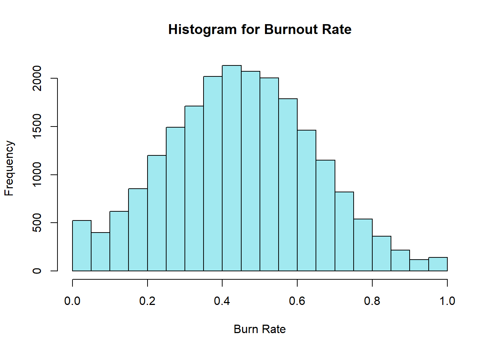
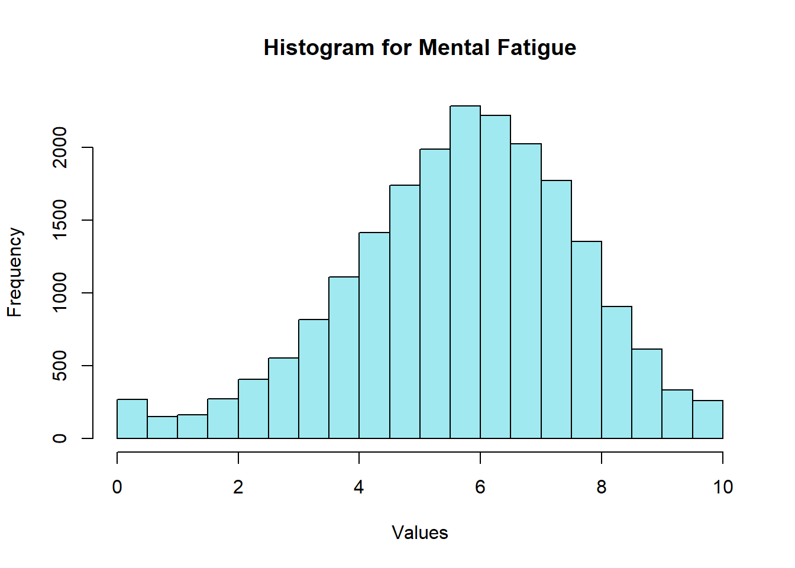
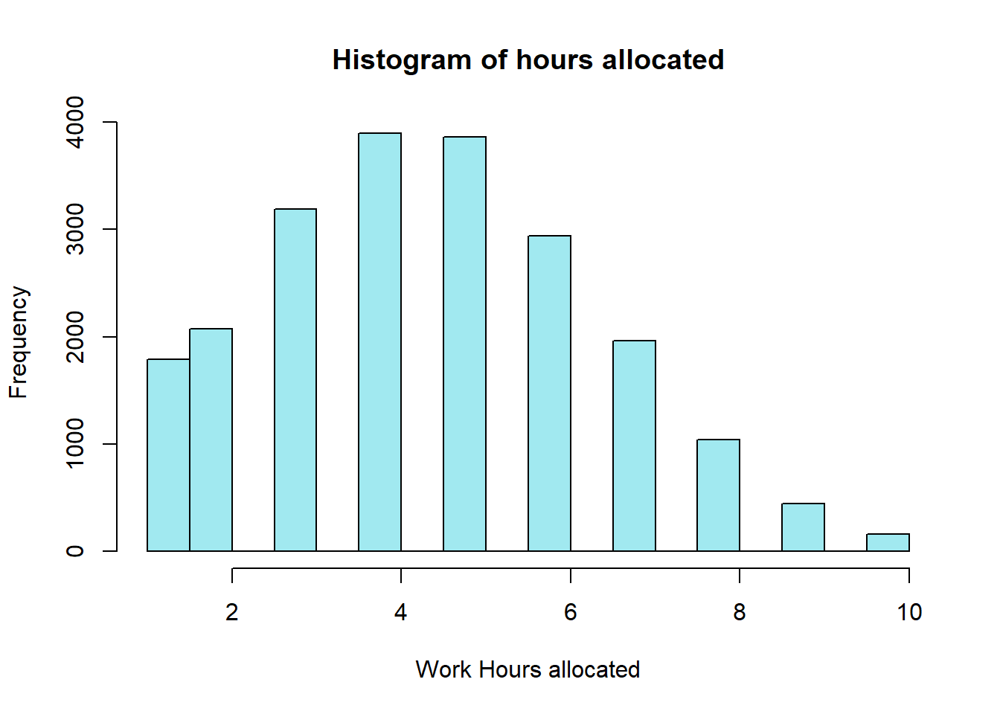
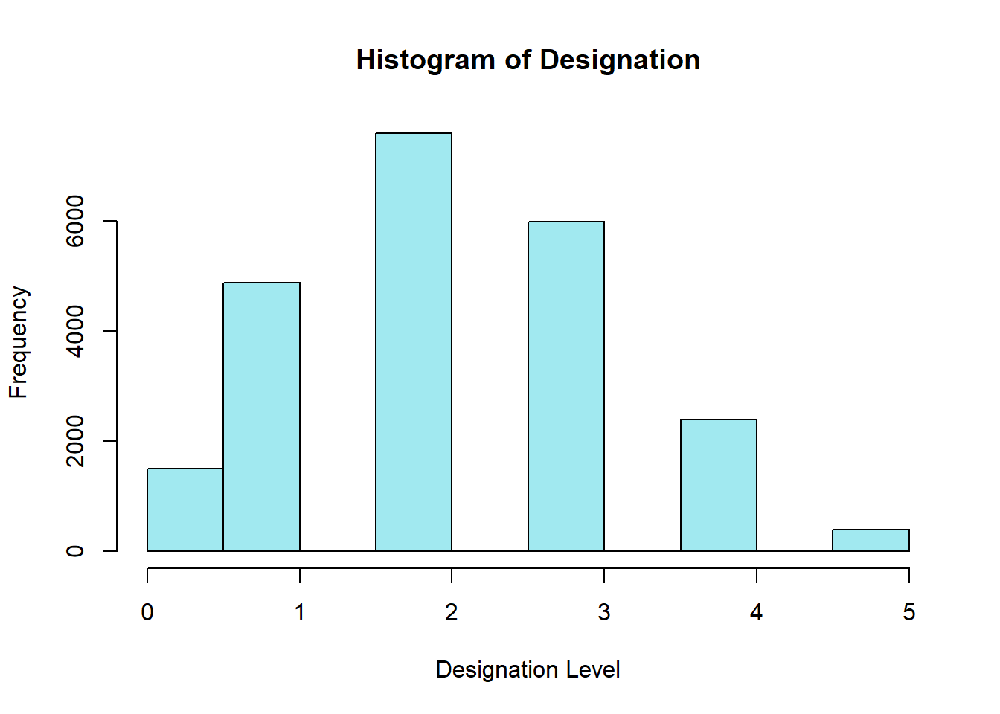
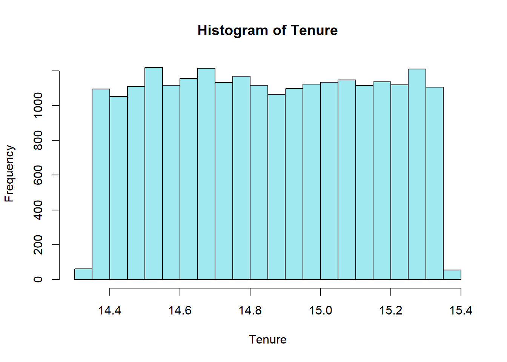
We can note that Burnout Rate shows a distribution close to a normal distribution while a bit skewed to the right. Hours allocated seems also skewed to the right.
In the case of Mental Fatigue, the distribution seems also a bit skewed to the left.
In the case of tenure seems a very homogeneous distribution. Seems that all employees in this data sample were hired within 12 months period.
Let’s visualize Gender, Type of Business and Work setting (WFH):
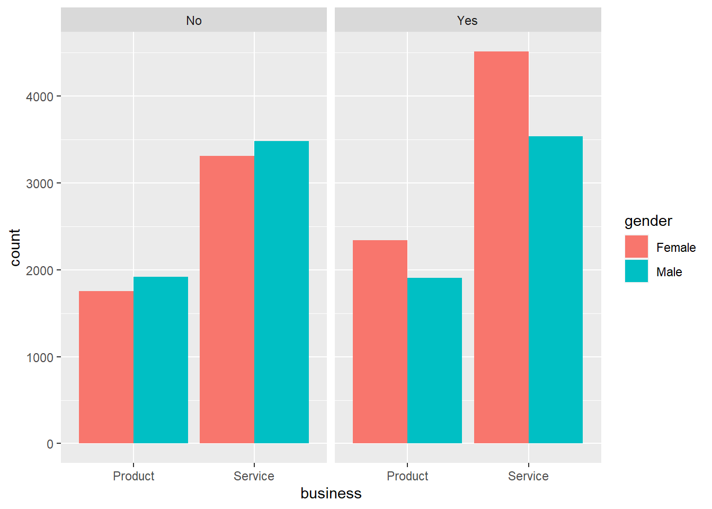
Seems that there are more females working from home than males regardless the type of business.
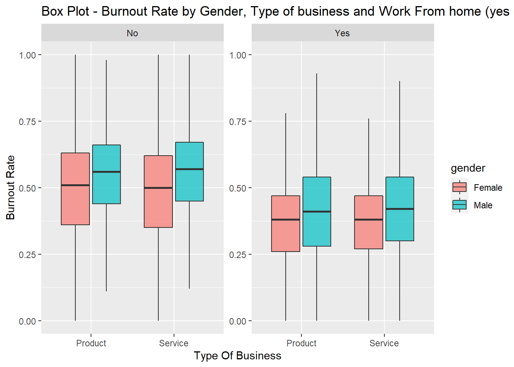
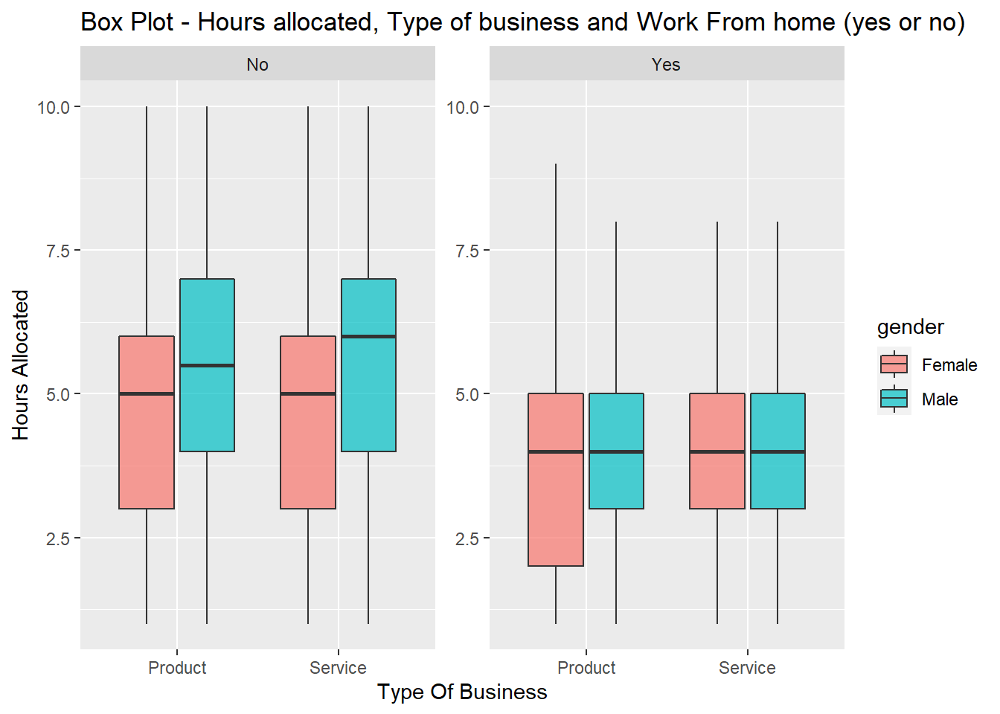
It looks like the Burnout rate is higher in the employees working on site compared to employees working from home, and males shows higher rate compared to females in both type of businesses but it seems a higher difference among employees working from home.
On the other hand, the numbers of hours allocated seems higher for employees working on site and particularly males regardless the type of business.
`geom_smooth()` using formula 'y ~ x'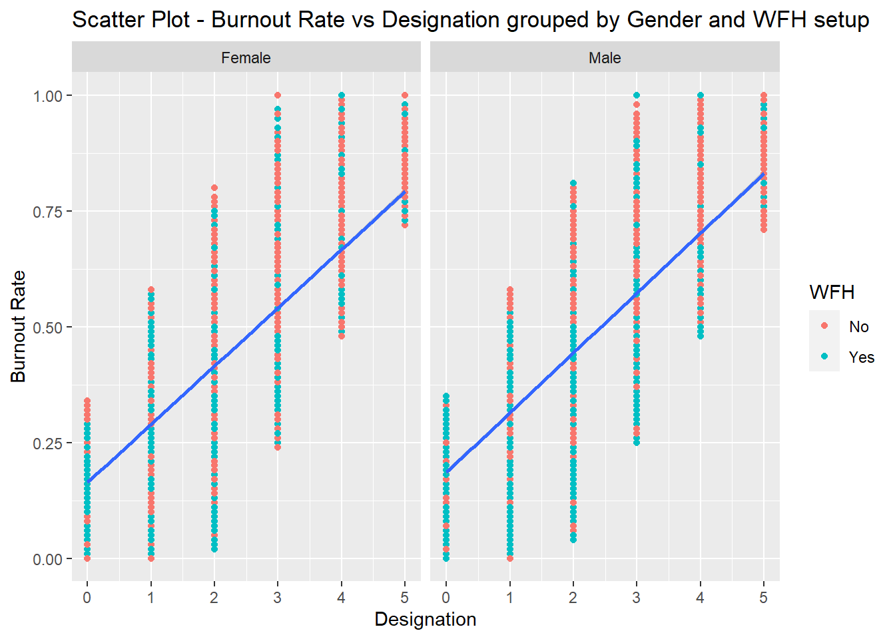
`geom_smooth()` using formula 'y ~ x'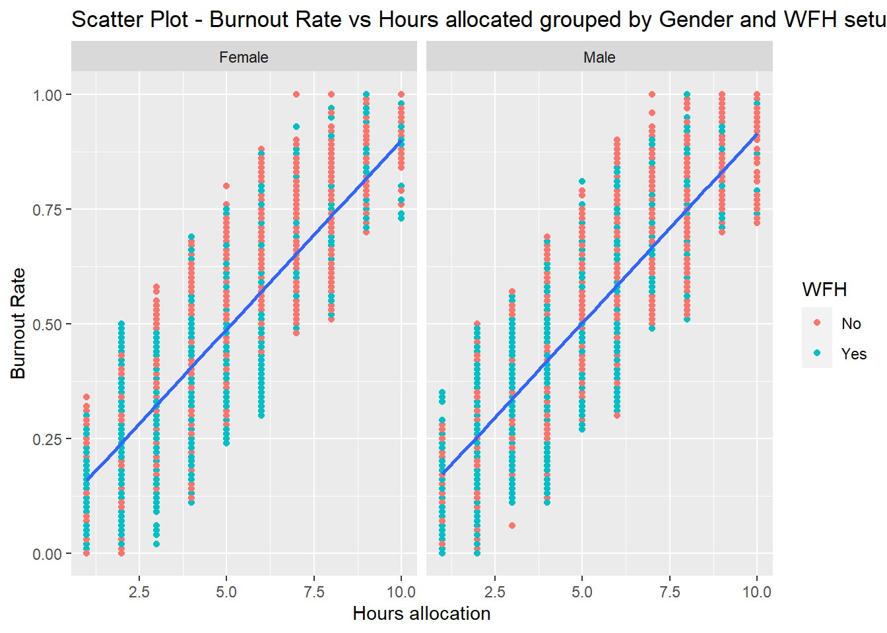
`geom_smooth()` using formula 'y ~ s(x, bs = "cs")'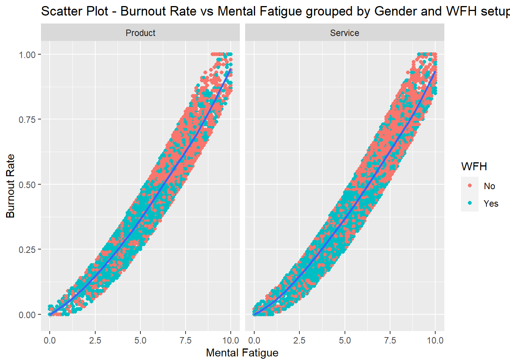
`geom_smooth()` using formula 'y ~ x'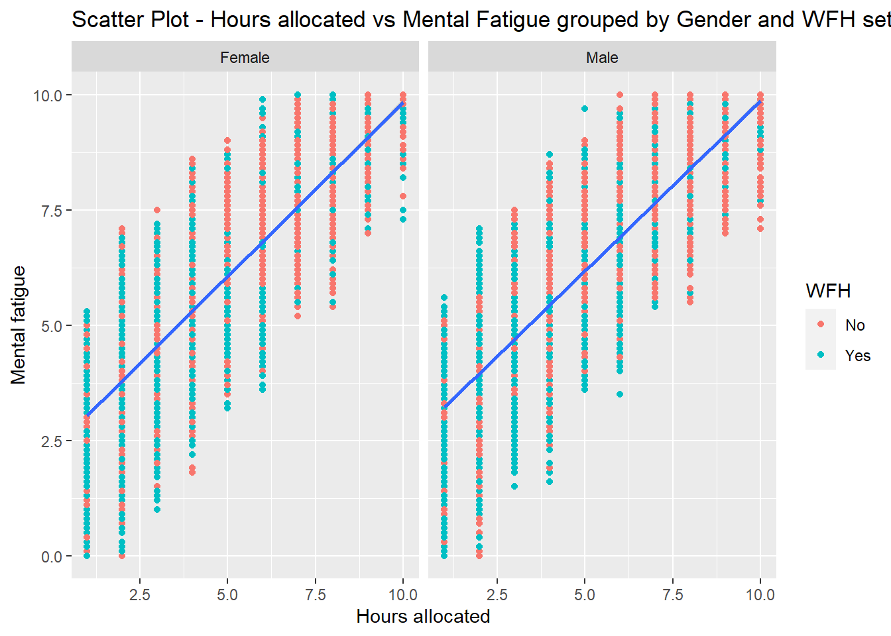
`geom_smooth()` using formula 'y ~ x'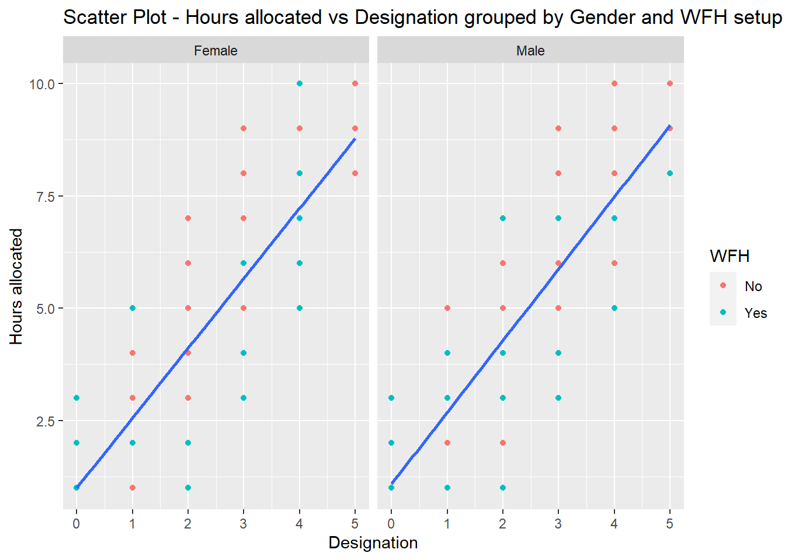
From the charts we can see that there is a positive relationship between:
All of those relationship exist regardless the gender and seems moderated by the work from home setup.
Seems that working from home has a key role in the relationship of the variables.
Lastly the relationship between Burnout rate and Fatigue doesn’t look completely lineal, but let’s check the so I will create a new variable by doing a quadratic transformation of Fatigue, and using it later for the regression.
Let’s analyze these initial findings with a few statistics.
Df Sum Sq Mean Sq F value Pr(>F)
business 1 0.0 0.02 0.446 0.504133
gender 1 20.4 20.40 584.657 < 2e-16 ***
WFH 1 74.3 74.28 2128.566 < 2e-16 ***
business:gender 1 0.0 0.02 0.546 0.459774
business:WFH 1 0.1 0.09 2.465 0.116406
gender:WFH 1 0.4 0.45 12.861 0.000336 ***
business:gender:WFH 1 0.1 0.06 1.736 0.187602
Residuals 21618 754.4 0.03
---
Signif. codes: 0 '***' 0.001 '**' 0.01 '*' 0.05 '.' 0.1 ' ' 1
1124 observations deleted due to missingnessAs we can see in this three-way ANOVA, type of business seems not relevant to explain burnout rate as the F value is not significant, but gender and WFH are both significant and also are when combined.
Let’s explore the relationship among continuous variables using a correlation matrix:
burn.rate hours designation fatigue
burn.rate 1.00 0.86 0.74 0.94
hours 0.86 1.00 0.88 0.80
designation 0.74 0.88 1.00 0.69
fatigue 0.94 0.80 0.69 1.00The first thing we have to notice is that Hours allocated shows strong correlation with almost all the rest fo the variables, this could represent multicollinearity. So I may need to exclude some variables the Regression analysis.
In this case seems that designation has a very strong positive correlation with hours allocated, seems that the company assign to more senior employees more work hours.
But to explain burnout seems more logic to think that number of work hours explain burnout, so I rather use hours and not designation in the model and avoid multicollinearity.
Also I’ll use backward Stepwise regression to keep only the relevant variables.
Call:
lm(formula = burn.rate ~ fatigue + gender.f + business.p + hours +
WFH.y, data = burn2)
Residuals:
Min 1Q Median 3Q Max
-0.157101 -0.041106 -0.000602 0.040688 0.201499
Coefficients:
Estimate Std. Error t value Pr(>|t|)
(Intercept) -0.0801515 0.0016618 -48.232 < 2e-16 ***
fatigue 0.0739451 0.0003566 207.364 < 2e-16 ***
gender.f -0.0045718 0.0008294 -5.512 3.59e-08 ***
business.p -0.0004356 0.0008608 -0.506 0.613
hours 0.0262183 0.0003355 78.151 < 2e-16 ***
WFH.y -0.0117741 0.0008602 -13.688 < 2e-16 ***
---
Signif. codes: 0 '***' 0.001 '**' 0.01 '*' 0.05 '.' 0.1 ' ' 1
Residual standard error: 0.05579 on 18584 degrees of freedom
(4160 observations deleted due to missingness)
Multiple R-squared: 0.9205, Adjusted R-squared: 0.9205
F-statistic: 4.303e+04 on 5 and 18584 DF, p-value: < 2.2e-16Start: AIC=-107298.9
burn.rate ~ fatigue + gender.f + business.p + hours + WFH.y
Df Sum of Sq RSS AIC
- business.p 1 0.001 57.852 -107301
<none> 57.851 -107299
- gender.f 1 0.095 57.946 -107270
- WFH.y 1 0.583 58.434 -107114
- hours 1 19.012 76.864 -102018
- fatigue 1 133.857 191.708 -85028
Step: AIC=-107300.6
burn.rate ~ fatigue + gender.f + hours + WFH.y
Df Sum of Sq RSS AIC
<none> 57.852 -107301
- gender.f 1 0.094 57.946 -107272
- WFH.y 1 0.583 58.435 -107116
- hours 1 19.014 76.866 -102020
- fatigue 1 133.857 191.709 -85030
Call:
lm(formula = burn.rate ~ fatigue + gender.f + hours + WFH.y,
data = burn2)
Residuals:
Min 1Q Median 3Q Max
-0.156953 -0.041084 -0.000499 0.040699 0.201211
Coefficients:
Estimate Std. Error t value Pr(>|t|)
(Intercept) -0.0803079 0.0016327 -49.186 < 2e-16 ***
fatigue 0.0739452 0.0003566 207.369 < 2e-16 ***
gender.f -0.0045675 0.0008293 -5.508 3.69e-08 ***
hours 0.0262190 0.0003355 78.155 < 2e-16 ***
WFH.y -0.0117739 0.0008602 -13.688 < 2e-16 ***
---
Signif. codes: 0 '***' 0.001 '**' 0.01 '*' 0.05 '.' 0.1 ' ' 1
Residual standard error: 0.05579 on 18585 degrees of freedom
(4160 observations deleted due to missingness)
Multiple R-squared: 0.9205, Adjusted R-squared: 0.9205
F-statistic: 5.379e+04 on 4 and 18585 DF, p-value: < 2.2e-16Type of business is not relevant to the model to explain Burnout. so it is excluded from the model.
And Fatigue, Gender, Working hours and WFH setting, all with a p-value < 0.001 explain 92% of the burnout rate.
In particular, any increase in units of Fatigue increases burnout rate by 0.07 points (or 7% as the burnout scale goes from 0 to 1). As well as Working hours, any additional hour allocated increases burnout rate by 0.02 points (or 2% increase).
On the other side, being Male is significantly associated with higher burnout rates (0.004 points) and working on-site is also associated to higher burnout rates (increases the burnout rate by 1%, or 0.01 points).
Let’s check assumptions.
Doesn’t seems there are assumptions violations in this model.
However based on the scatter plot above about Burnout Rate and Fatigue, the relationship doesn’t seem very linear, therefore if we apply a polynomial regression by doing a quadratic transformation of fatigue the model would adjust a bit better.
Start: AIC=-108108.5
burn.rate ~ business.p + hours + gender.f + I(fatigue^2) + fatigue +
WFH.y
Df Sum of Sq RSS AIC
- business.p 1 0.0008 55.380 -108110
<none> 55.380 -108109
- gender.f 1 0.0610 55.441 -108090
- WFH.y 1 0.3857 55.765 -107981
- I(fatigue^2) 1 2.4715 57.851 -107299
- fatigue 1 10.8741 66.254 -104778
- hours 1 15.8119 71.192 -103441
Step: AIC=-108110.3
burn.rate ~ hours + gender.f + I(fatigue^2) + fatigue + WFH.y
Df Sum of Sq RSS AIC
<none> 55.380 -108110
- gender.f 1 0.0609 55.441 -108092
- WFH.y 1 0.3857 55.766 -107983
- I(fatigue^2) 1 2.4715 57.852 -107301
- fatigue 1 10.8741 66.255 -104780
- hours 1 15.8129 71.193 -103443
Call:
lm(formula = burn.rate ~ hours + gender.f + I(fatigue^2) + fatigue +
WFH.y, data = burn2)
Residuals:
Min 1Q Median 3Q Max
-0.150292 -0.041127 -0.000951 0.039024 0.190195
Coefficients:
Estimate Std. Error t value Pr(>|t|)
(Intercept) -2.834e-02 2.410e-03 -11.757 < 2e-16 ***
hours 2.437e-02 3.345e-04 72.844 < 2e-16 ***
gender.f -3.671e-03 8.120e-04 -4.521 6.18e-06 ***
I(fatigue^2) 2.277e-03 7.906e-05 28.799 < 2e-16 ***
fatigue 5.153e-02 8.530e-04 60.407 < 2e-16 ***
WFH.y -9.613e-03 8.450e-04 -11.377 < 2e-16 ***
---
Signif. codes: 0 '***' 0.001 '**' 0.01 '*' 0.05 '.' 0.1 ' ' 1
Residual standard error: 0.05459 on 18584 degrees of freedom
(4160 observations deleted due to missingness)
Multiple R-squared: 0.9239, Adjusted R-squared: 0.9239
F-statistic: 4.512e+04 on 5 and 18584 DF, p-value: < 2.2e-16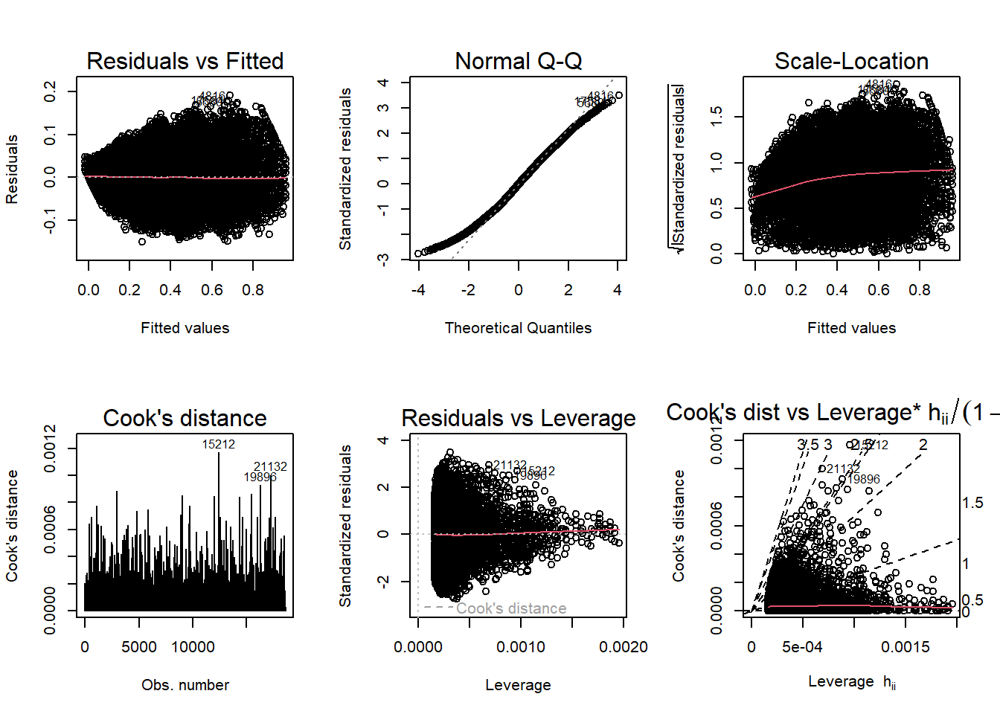
The model keeps the significant relationships we explained before and seems to fit better now. The new quadratic Fatigue is significant in the model, so I’ll include it.
Hours allocated, Gender, Fatigue and WFH or not seems to explain significantly the burnout in the employees included in the study. Being Hours allocated and fatigue the most relevant variables in the model to explain burnout (higher t value).
Specifically, under this model burnout rate increases by 0.05 points (or 5%) per each unit increase in Fatigue and 0.02 (or 2%) per each hour allocated.
But let’s compare models.
#PRESS
pr <- resid(lm.model1)/(1 - lm.influence(lm.model1)$hat)
pr2 <- pr^2
pr3 <- resid(lm.model2)/(1 - lm.influence(lm.model1)$hat)
pr4 <- pr3^2
#df for table
metrics_df <- data.frame(
Model = c("Model 1", "Model 2 - Quadratic"),
AIC = c(AIC(lm.model1), AIC(lm.model2)),
BIC = c(BIC(lm.model1), BIC(lm.model2)),
PRESS = c(sum(pr2), sum(pr4))
)
kable(metrics_df, caption = "Models Comparison") %>%
kable_styling("striped")| Model | AIC | BIC | PRESS |
|---|---|---|---|
| Model 1 | -54540.72 | -54485.91 | 57.88767 |
| Model 2 - Quadratic | -55350.38 | -55287.74 | 55.41337 |
Considering that:
We can say that both models works very well to explain burnout rate. But I feel more comfortable with Model 2 where the Mental Fatigue has a quadratic transformation as the R2 is higher for this model.
There is a positive relationship between burnout and designation level.
This means that Alternative Hypothesis 2 can’t be accepted as it states a negative relationship between those two variables.
On the other hand, Alternative Hypothesis 1 stated that being in Services and being female is related to a higher burnout rate, and the results indicate that the type of business is not relevant to predict burnout, and being female is neither associated with higher burnout.
However, gender explains in part the burnout. In particular, being female is associated with a lower burnout rate compared to male employees.
Lastly, concerning Alternative Hypothesis 3, the number of hours allocated is positively related to burnout; in particular, working on-site is associated with more working hours for males and females compared to employees working from home. However, within the group of employees working on-site, males seem to have significantly more hours allocated than females.
Ultimately, the number of working hours and mental fatigue are the most relevant variables to explain burnout. Gender and WFH setup seems relevant regarding how the hours are allocated. Being male working on site absorbs more work hours, therefore more burnout.
Bakker, A. B., & Demerouti, E. (2017). Job demands-resources theory: Taking stock and looking forward. Journal of Occupational Health Psychology, 22(3), 273–285.
Lee, Y., Eissenstat, S. (2017). A longitudinal examination of the causes and effects of burnout based on the job demands-resources model. International Journal for Educational and Vocational Guidance, 18(3), 337–354.
Malesic, J. (2022). The end of Burnout. University of California Press.
Maslach, C., & Leiter, M. P. (2016). Understanding the burnout experience: Recent research and its implications for psychiatry. World Psychiatry, 15(2), 103–111.
West, C. P., Dyrbye, L. N., Erwin, P., Shanafelt, T. D., (2016). Interventions to promote physician well-being and mitigate burnout: A systematic review and meta-analysis. The Lancet, 388(10057), 2272–228
---
title: "Final Project - Burnout in the workplace"
author: "Felix Betanourt"
desription: "DACSS 603 Final Project"
date: "05/25/2023"
format:
html:
toc: true
code-fold: true
code-copy: true
code-tools: true
categories:
- final project
- burnout
- employee burnout
- descriptives
- regression
- Research question
- hyphoteses
---
```{r}
#| label: setup
#| warning: false
knitr::opts_chunk$set(echo = TRUE, warning = FALSE)
```
### **Introduction**.
Burnout is a pervasive issue in many professions, and its consequences can be significant for individuals and organizations alike. According to Maslach and Leiter (2016), burnout is characterized by emotional exhaustion, depersonalization, and reduced personal accomplishment. It is prevalent in a variety of fields, including healthcare (West et al., 2016), among other professions. Burnout can have serious consequences, including decreased job satisfaction, increased absenteeism, and turnover (West et al., 2016).
There is a growing body of research exploring the causes and consequences of burnout, as well as potential solutions. Some scholars have identified factors such as job demands, lack of control, and social support as contributing to burnout (Bakker & Demerouti, 2017).
Malesic (2022) emphasizes on working conditions as key factor in burnout in organizations. In particular when the employer doesn't reward enough, or unfairness is a common practice, or there is a lack of community among coworkers, then the ability and willingness to keep doing the job disintegrate.
Lee & Eissenstat (2017), for instance, affirm that psychological job demands and work-to-family conflict, as well as control over working hours/schedule, decision-making authority, and role clarity, have significant effects on burnout.
### Research Question.
This research paper aims to provide a comprehensive understanding of **how the type of business and seniority level explain the level of burnout.**
### Hypotheses.
In this research we expect that:
H1. Working in Services (vs product type of business) predicts a significantly higher burnout rate, especially in Female workers.
H2. Fewer years of experience (lower seniority) is significantly related to a higher burnout rate.
H3. The numbers of work hours allocated affect the burnout rate significantly in employees working from home setup (vs on site).
### Data analysis
```{r}
# Loading packages
suppressPackageStartupMessages(library(dplyr))
suppressPackageStartupMessages(library(tidyverse))
suppressPackageStartupMessages(library(data.table))
suppressPackageStartupMessages(library(psych))
suppressPackageStartupMessages(library(scales))
suppressPackageStartupMessages(library(lattice))
suppressPackageStartupMessages(library(formattable))
suppressPackageStartupMessages(library(kableExtra))
suppressPackageStartupMessages(library(ggplot2))
# Reading the data.
burn <- read.csv("_data/burnout.csv")
```
The dataset was obtained from:
https://www.kaggle.com/datasets/blurredmachine/are-your-employees-burning-out
Let's see the strucutre of the dataset:
```{r}
#Structure
str(burn)
```
The dataset contain 9 variables and 22750 observations.
Four of the variables are categorical and five are numeric (including one as date).
According to the source of the data, here is an definition of each variable:
Employee ID: The unique ID allocated for each employee.
Date of Joining: The date-time when the employee has joined the organization.
Gender: The gender of the employee
Company Type: The type of company where the employee is working
WFH Setup Available: Is the work from home facility available for the employee
Designation: The designation (designations refer to the expertise and qualifications a person must complete certain jobs) of the employee of work in the organization. In the range of \[0.0, 5.0\] bigger is higher designation.
Resource Allocation: The amount of resource allocated to the employee to work, ie. number of working hours.In the range of \[1.0, 10.0\] (higher means more resource)
Mental Fatigue Score: The level of fatigue mentally the employee is facing.In the range of \[0.0, 10.0\] where 0.0 means no fatigue and 10.0 means completely fatigue.
Burnout Rate: The value we need to predict for each employee telling the rate of Bur out while working.In the range of \[0.0, 1.0\] where the higher the value is more is the Burnout.
Let's see a Summary for each variable.
But first let's do some data wrangling:
- simplify the name of the variables
- transform the Date of hire into tenure in years
- eliminate ID form the df as it is not relevant for the analysis
- create new variables for categorical variables as numeric to simplify analysis: Gender (0= Male, 1=Female), WFH (1=Yes, 0=No), Type of Business (0=Service, 1=Product)
```{r}
#simplify some variable names and transforming date
burn <- rename(burn, fatigue = Mental.Fatigue.Score, hours = Resource.Allocation, WFH = WFH.Setup.Available, doh = Date.of.Joining, id = Employee.ID, business = Company.Type, designation = Designation, burn.rate = Burn.Rate, gender = Gender)
#transforming date of hire to tenure
burn$doh <- as.Date(burn$doh)
burn$tenure <- difftime("2023-4-20", burn$doh, units = "weeks")
burn$tenure <- burn$tenure/52
burn$tenure <- as.numeric(burn$tenure)
#eliminate ID as it's not relevant for the analysis. They are just the identification for each individual
burn2 <- burn %>%
dplyr::select(-id)
burn2 <- burn2%>%
mutate(gender.f = case_when(
gender == "Male" ~ 0,
gender == "Female" ~ 1,
)) %>%
mutate(business.p = case_when(
business == "Service" ~ 0,
business == "Product" ~ 1,
)) %>%
mutate(WFH.y = case_when(
WFH == "Yes" ~ 1,
WFH == "No" ~ 0,
))
```
#### Descriptives and exploratory visualization.
```{r}
#creating a df with only continuous variables
burn3 <- burn2 %>%
dplyr::select(-gender, -doh, -WFH, -business)
describe_data <- describe(x=burn3) %>%
dplyr::select(c(vars, n, mean, sd, median, min, max))
kable(describe_data) %>%
kable_styling("striped")
```
Histograms for Burnout Rate, mental Fatigue, Work hours allocated, Designation Level and tenure.
```{r}
hist(burn2$burn.rate, freq = TRUE, col="#a1e9f0", main = "Histogram for Burnout Rate", xlab = "Burn Rate", ylab = "Frequency")
hist(burn2$fatigue, freq = TRUE, col="#a1e9f0", main = "Histogram for Mental Fatigue", xlab = "Values", ylab = "Frequency")
hist(burn2$hours, freq = TRUE, col="#a1e9f0", main = "Histogram of hours allocated", xlab = "Work Hours allocated", ylab = "Frequency")
hist(burn2$designation, freq = TRUE, col="#a1e9f0", main = "Histogram of Designation", xlab = "Designation Level", ylab = "Frequency")
hist(burn2$tenure, freq = TRUE, col="#a1e9f0", main = "Histogram of Tenure", xlab = "Tenure", ylab = "Frequency")
```
We can note that Burnout Rate shows a distribution close to a normal distribution while a bit skewed to the right. Hours allocated seems also skewed to the right.
In the case of Mental Fatigue, the distribution seems also a bit skewed to the left.
In the case of tenure seems a very homogeneous distribution. Seems that all employees in this data sample were hired within 12 months period.
Let's visualize Gender, Type of Business and Work setting (WFH):
```{r}
ggplot(burn) +
geom_bar(aes(x=business, fill=gender),
position = "dodge") +
facet_wrap(~WFH)
```
Seems that there are more females working from home than males regardless the type of business.
#### Explore relationships
```{r}
box2 <- ggplot(burn2, aes(x=business, y=burn.rate, fill=gender)) +
geom_boxplot(alpha=0.7, outlier.shape = NA) +
labs(title="Box Plot - Burnout Rate by Gender, Type of business and Work From home (yes or no)",
x ="Type Of Business", y = "Burnout Rate")+
facet_wrap(~WFH, scale="free")
box2
box3 <- ggplot(burn2, aes(x=business, y=hours, fill=gender)) +
geom_boxplot(alpha=0.7, outlier.shape = NA) +
labs(title="Box Plot - Hours allocated, Type of business and Work From home (yes or no)",
x ="Type Of Business", y = "Hours Allocated")+
facet_wrap(~WFH, scale="free")
box3
```
It looks like the Burnout rate is higher in the employees working on site compared to employees working from home, and males shows higher rate compared to females in both type of businesses but it seems a higher difference among employees working from home.
On the other hand, the numbers of hours allocated seems higher for employees working on site and particularly males regardless the type of business.
```{r}
scatter1 <- ggplot(burn2, aes(designation,burn.rate))+
geom_point(aes(color=WFH))+
geom_smooth(method="lm")+
labs(title="Scatter Plot - Burnout Rate vs Designation grouped by Gender and WFH setup",
x ="Designation", y = "Burnout Rate")+
facet_wrap(~gender)
scatter1
scatter2 <- ggplot(burn2, aes(hours,burn.rate))+
geom_point(aes(color=WFH))+
geom_smooth(method="lm")+
labs(title="Scatter Plot - Burnout Rate vs Hours allocated grouped by Gender and WFH setup",
x ="Hours allocation", y = "Burnout Rate")+
facet_wrap(~gender)
scatter2
scatter3 <- ggplot(burn2, aes(fatigue,burn.rate))+
geom_point(aes(color=WFH))+
geom_smooth(method="gam")+
labs(title="Scatter Plot - Burnout Rate vs Mental Fatigue grouped by Gender and WFH setup",
x ="Mental Fatigue", y = "Burnout Rate")+
facet_wrap(~business)
scatter3
scatter4 <- ggplot(burn2, aes(hours,fatigue))+
geom_point(aes(color=WFH))+
geom_smooth(method="lm")+
labs(title="Scatter Plot - Hours allocated vs Mental Fatigue grouped by Gender and WFH setup",
x ="Hours allocated", y = "Mental fatigue")+
facet_wrap(~gender)
scatter4
scatter5 <- ggplot(burn2, aes(designation, hours))+
geom_point(aes(color=WFH))+
geom_smooth(method="lm")+
labs(title="Scatter Plot - Hours allocated vs Designation grouped by Gender and WFH setup",
x ="Designation", y = "Hours allocated")+
facet_wrap(~gender)
scatter5
```
From the charts we can see that there is a positive relationship between:
- Designation and burnout rate
- Amount of hours allocated and burnout rate
- Mental fatigue and burnout rate
- Hours allocated and Mental fatigue
All of those relationship exist regardless the gender and seems moderated by the work from home setup.
Seems that working from home has a key role in the relationship of the variables.
Lastly the relationship between Burnout rate and Fatigue doesn't look completely lineal, but let's check the so I will create a new variable by doing a quadratic transformation of Fatigue, and using it later for the regression.
Let's analyze these initial findings with a few statistics.
1. First let's see how is the relationship between Burnout Rate, type of business, WFH and gender:
```{r}
# Three-way ANOVA
aov.model1 <- aov(burn.rate ~ business * gender * WFH, data = burn2)
summary(aov.model1)
```
As we can see in this three-way ANOVA, type of business seems not relevant to explain burnout rate as the F value is not significant, but gender and WFH are both significant and also are when combined.
Let's explore the relationship among continuous variables using a correlation matrix:
```{r}
# Cor Matrix
cor_matrix2 <- cor(burn2[, c("burn.rate", "hours", "designation", "fatigue")], use = "complete.obs")
round(cor_matrix2, 2)
```
The first thing we have to notice is that Hours allocated shows strong correlation with almost all the rest fo the variables, this could represent multicollinearity. So I may need to exclude some variables the Regression analysis.
In this case seems that designation has a very strong positive correlation with hours allocated, seems that the company assign to more senior employees more work hours.
But to explain burnout seems more logic to think that number of work hours explain burnout, so I rather use hours and not designation in the model and avoid multicollinearity.
Also I'll use backward Stepwise regression to keep only the relevant variables.
```{r}
# Fit a multiple regression model with predictor variables
lm.model1 <- lm(burn.rate ~ fatigue + gender.f + business.p + hours + WFH.y, data = burn2)
summary(lm.model1)
# Step Model - Forward
step_model1 <- step(lm.model1, direction = "backward", criterion= "AIC")
summary(step_model1)
```
Type of business is not relevant to the model to explain Burnout. so it is excluded from the model.
And Fatigue, Gender, Working hours and WFH setting, all with a p-value < 0.001 explain 92% of the burnout rate.
In particular, any increase in units of Fatigue increases burnout rate by 0.07 points (or 7% as the burnout scale goes from 0 to 1). As well as Working hours, any additional hour allocated increases burnout rate by 0.02 points (or 2% increase).
On the other side, being Male is significantly associated with higher burnout rates (0.004 points) and working on-site is also associated to higher burnout rates (increases the burnout rate by 1%, or 0.01 points).
Let's check assumptions.
```{r}
par(mfrow = c(2,3))
plot(step_model1, which = 1:6)
```
Doesn't seems there are assumptions violations in this model.
However based on the scatter plot above about Burnout Rate and Fatigue, the relationship doesn't seem very linear, therefore if we apply a polynomial regression by doing a quadratic transformation of fatigue the model would adjust a bit better.
```{r}
lm.model2 <- lm(burn.rate ~ business.p + hours + gender.f + I(fatigue^2) + fatigue + WFH.y, data = burn2)
# Step Model - Forward
step_model2 <- step(lm.model2, direction = "backward", criterion= "AIC")
summary(step_model2)
par(mfrow = c(2,3))
plot(step_model2, which = 1:6)
```
The model keeps the significant relationships we explained before and seems to fit better now. The new quadratic Fatigue is significant in the model, so I'll include it.
Hours allocated, Gender, Fatigue and WFH or not seems to explain significantly the burnout in the employees included in the study. Being Hours allocated and fatigue the most relevant variables in the model to explain burnout (higher t value).
Specifically, under this model burnout rate increases by 0.05 points (or 5%) per each unit increase in Fatigue and 0.02 (or 2%) per each hour allocated.
But let's compare models.
```{r}
#PRESS
pr <- resid(lm.model1)/(1 - lm.influence(lm.model1)$hat)
pr2 <- pr^2
pr3 <- resid(lm.model2)/(1 - lm.influence(lm.model1)$hat)
pr4 <- pr3^2
#df for table
metrics_df <- data.frame(
Model = c("Model 1", "Model 2 - Quadratic"),
AIC = c(AIC(lm.model1), AIC(lm.model2)),
BIC = c(BIC(lm.model1), BIC(lm.model2)),
PRESS = c(sum(pr2), sum(pr4))
)
kable(metrics_df, caption = "Models Comparison") %>%
kable_styling("striped")
```
Considering that:
1. R2 for model 1 is 0.9205 and for model 2 (with quadratic fatigue) is 0.9235
2. AIC, BIC and PRESS are very close among the two models
3. and, that in the model 2 any slightly violations of assumptions founded in model 1.
We can say that both models works very well to explain burnout rate. But I feel more comfortable with Model 2 where the Mental Fatigue has a quadratic transformation as the R2 is higher for this model.
### Conclusions
There is a positive relationship between burnout and designation level.
This means that Alternative Hypothesis 2 can’t be accepted as it states a negative relationship between those two variables.
On the other hand, Alternative Hypothesis 1 stated that being in Services and being female is related to a higher burnout rate, and the results indicate that the type of business is not relevant to predict burnout, and being female is neither associated with higher burnout.
However, gender explains in part the burnout. In particular, being female is associated with a lower burnout rate compared to male employees.
Lastly, concerning Alternative Hypothesis 3, the number of hours allocated is positively related to burnout; in particular, working on-site is associated with more working hours for males and females compared to employees working from home. However, within the group of employees working on-site, males seem to have significantly more hours allocated than females.
Ultimately, the number of working hours and mental fatigue are the most relevant variables to explain burnout. Gender and WFH setup seems relevant regarding how the hours are allocated. Being male working on site absorbs more work hours, therefore more burnout.
### **References**:
Bakker, A. B., & Demerouti, E. (2017). Job demands-resources theory: Taking stock and looking forward. Journal of Occupational Health Psychology, 22(3), 273--285.
Lee, Y., Eissenstat, S. (2017). A longitudinal examination of the causes and effects of burnout based on the job demands-resources model. International Journal for Educational and Vocational Guidance, 18(3), 337--354.
Malesic, J. (2022). The end of Burnout. University of California Press.
Maslach, C., & Leiter, M. P. (2016). Understanding the burnout experience: Recent research and its implications for psychiatry. World Psychiatry, 15(2), 103--111.
West, C. P., Dyrbye, L. N., Erwin, P., Shanafelt, T. D., (2016). Interventions to promote physician well-being and mitigate burnout: A systematic review and meta-analysis. The Lancet, 388(10057), 2272--228